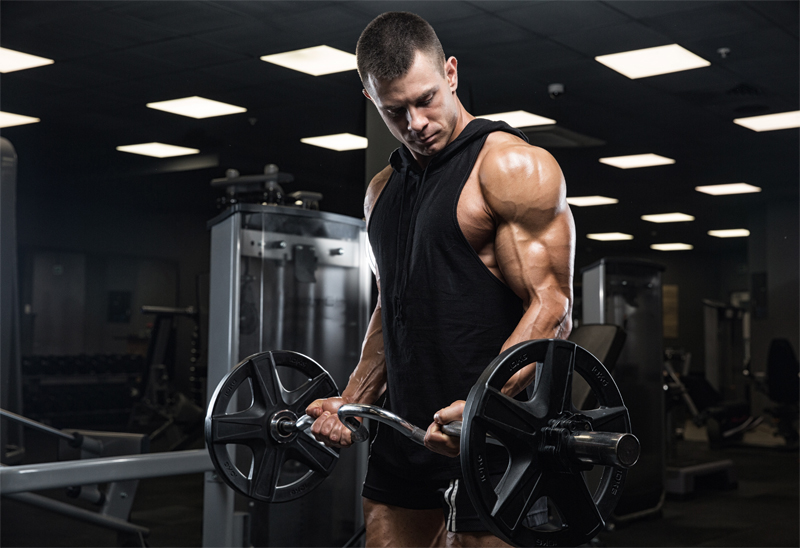

1. Diet Basics for All Lifters
- Eat high-protein meals (chicken, eggs, fish, beef, tofu, legumes).
- Include complex carbs (brown rice, oats, sweet potatoes, whole grains).
- Consume healthy fats (avocados, nuts, olive oil, peanut butter).
- Hydrate well – aim for 3–4 liters of water daily.
- Eat 4–6 meals a day to fuel muscle growth and recovery.

2. Diet for Skinny (Ectomorph) Lifters
Goal: Gain muscle mass by eating more calories than you burn.
- High-calorie meals with plenty of carbs and protein.
- Add calorie-dense snacks like peanut butter, bananas, trail mix.
- Include post-workout shakes with whey protein + banana + oats + milk.
- Don’t fear carbs – increase portion sizes of rice, pasta, and potatoes.
- Track weight weekly and increase calories if no gain.
3. Diet for Fatty (Endomorph) Lifters
Goal: Build muscle while minimizing fat – focus on clean eating and portion control.
- Focus on lean proteins (chicken breast, turkey, egg whites, legumes).
- Moderate healthy fats and reduce added sugars.
- Eat low-GI carbs like oats, sweet potatoes, and quinoa.
- Avoid junk food, soda, fried and processed foods.
- Control portion sizes and monitor calorie intake.
4. Beginner Bodybuilding Diet Plan
- Breakfast: Oats + banana + 2 boiled eggs
- Mid-morning: Protein shake + peanut butter toast
- Lunch: Grilled chicken + brown rice + veggies
- Snack: Greek yogurt + nuts
- Dinner: Fish + sweet potatoes + salad
5. Advanced Lifters Diet Tips
- Use macros: Protein (1.2–2.2g per kg), Carbs (3–6g per kg), Fats (0.5–1g per kg).
- Meal prep in advance to stay consistent.
- Use creatine, whey protein, and BCAAs for optimal recovery.
- Adjust carbs around workout – more carbs before/after training.
- Cycle calories depending on training days (more on heavy days).
6. Final Tips
- Track your progress – photos, measurements, and strength levels.
- Be consistent. Results take time – trust the process.
- Sleep 7–9 hours a night to support muscle recovery.